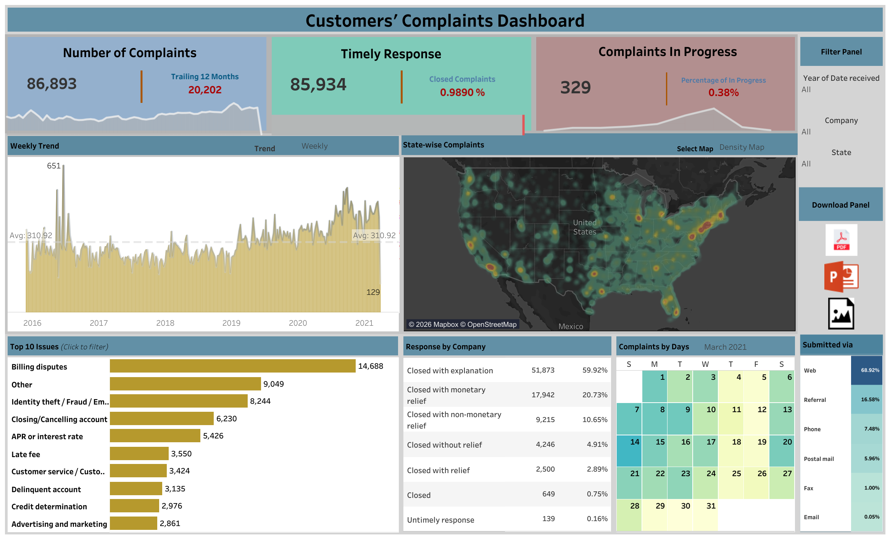
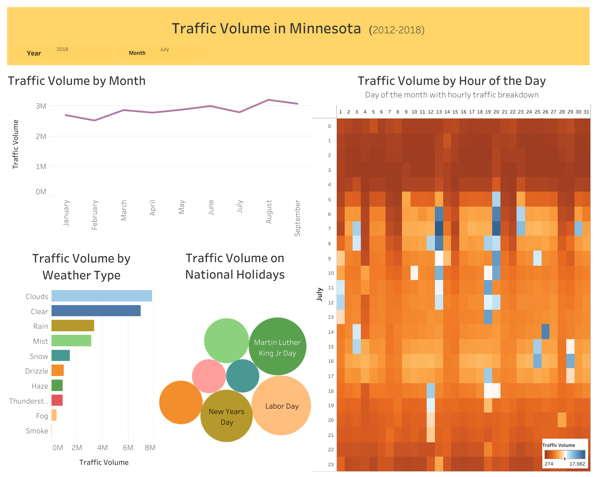
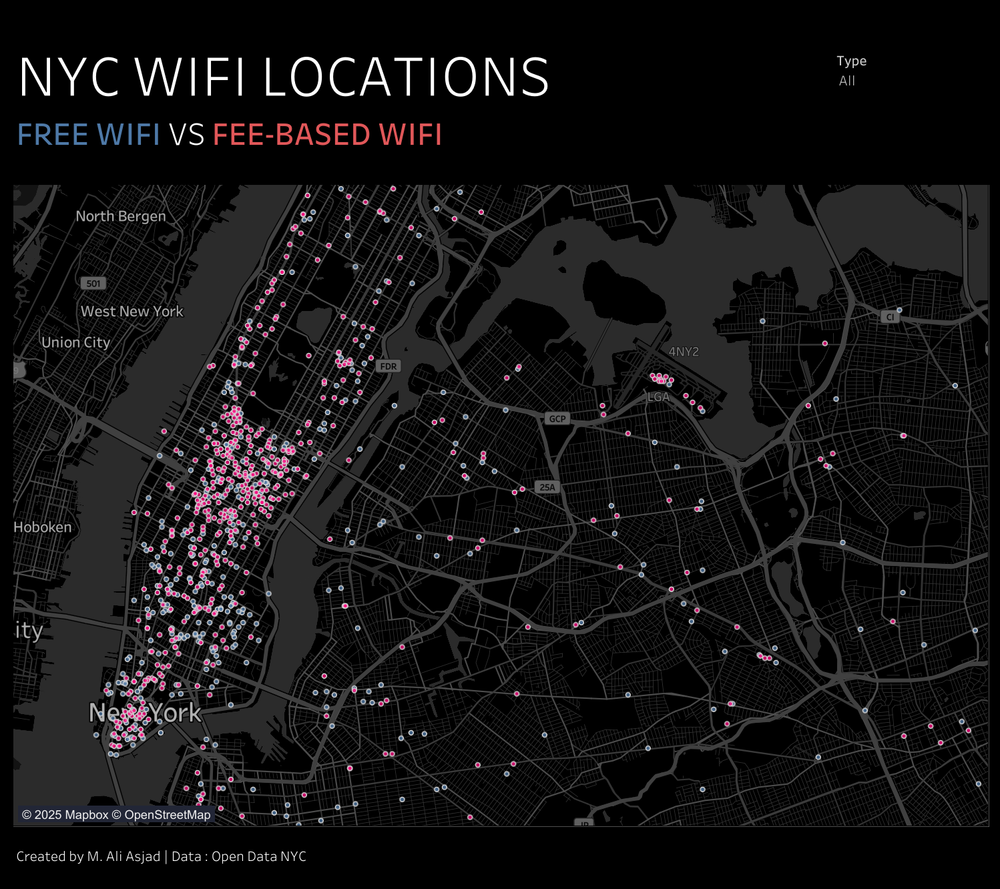
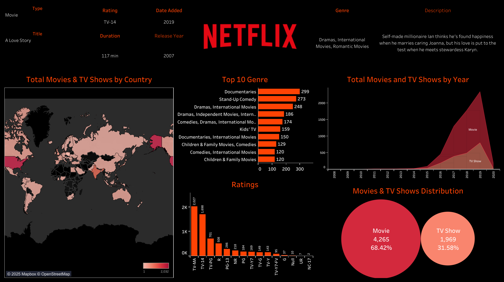

Master of Science, Business Analytics
Data Science Specialization
Carl H. Lindner College of Business, University of Cincinnati
GPA 3.91/4.0I combine SQL, Python, R, machine learning, forecasting, BI dashboards, and AI-assisted analytics to turn complex business data into clear insights, reliable reporting, and decision-ready data products.
About
I am a data science and analytics professional with 6+ years of experience helping teams make better decisions through predictive modeling, dashboard storytelling, experimentation, and automated reporting.
My work is strongest where business questions meet technical execution: SQL data modeling, Python and R analysis, machine learning, time-series forecasting, A/B testing, generative AI workflows, Tableau, Power BI, BigQuery, SQL Server, and stakeholder-ready communication.
Education
Graduate training in business analytics and data science, supported by an engineering background in quantitative problem solving.
Data Science Specialization
Carl H. Lindner College of Business, University of Cincinnati
GPA 3.91/4.0University of Engineering and Technology, Taxila
Experience
My background spans retail operations, university research, marketing analytics, insurance risk, and customer analytics. Across each role, I have focused on building dependable data pipelines, useful models, and dashboards that answer real business questions.
Selected Work
Flask-based ML application that predicts used-car resale value from brand, model, year, fuel type, and kilometers driven. The model uses real-world PakWheels data and an XGBoost regression workflow covering preprocessing, training, evaluation, and web deployment.
R-based analysis of transaction-level pizza restaurant data to identify best-selling and underperforming items, peak sales periods, weekday/weekend patterns, and actionable strategies for menu optimization and targeted marketing.
Collaborative R project that models career trajectories for defensive tackle draft prospects. The repository includes CSV data, modeling code, and a Shiny app for exploring predicted prospect outcomes.
Analyzed 40M+ rows of real customer transaction data to recommend loyalty strategies. Used RFM segmentation and market basket analysis to identify customer profiles and propose bundled care-package offers for targeted demographics.
Tableau Public
Each dashboard is structured around a business question, a clean analytical layout, and visual patterns that help stakeholders quickly understand the problem, the analysis, and the decision value.

A service-operations dashboard for monitoring complaint volume, timely responses, in-progress cases, issue categories, geographic complaint density, response outcomes, and submission channels. The layout is designed for managers who need to identify where complaint risk is rising and which issues require attention.

A transportation dashboard analyzing Minnesota traffic volume from 2012 to 2018. It combines monthly trends, weather-based traffic differences, national holiday effects, and an hourly heatmap to make traffic seasonality and peak movement patterns easier to inspect.

A geospatial Tableau visual comparing free and fee-based public WiFi locations across New York City. The map makes location density and accessibility differences visible at a neighborhood level.

A content analytics dashboard summarizing Netflix titles by country, genre, rating, type, release year, and movie-versus-TV distribution. It is designed to quickly show content mix, catalog growth, and genre concentration.
Capabilities
I bring a practical technical toolkit for data science and analytics work: structured querying, Python/R modeling, BI reporting, statistical analysis, cloud platforms, and AI-assisted workflows.
SQL, Python, R, Excel VBA, Power Query, Tableau, Power BI, DAX, BigQuery, SQL Server, Flask
ETL, data modeling, data cleaning, EDA, KPI design, dashboard development, A/B testing, stakeholder reporting
Regression, classification, clustering, time-series forecasting, feature engineering, model evaluation, NLP-to-SQL, generative AI concepts
Azure, Google Cloud, AWS, Google BI Certificate, Tableau Desktop Specialist, Azure AI Fundamentals
Professional Profiles
Contact